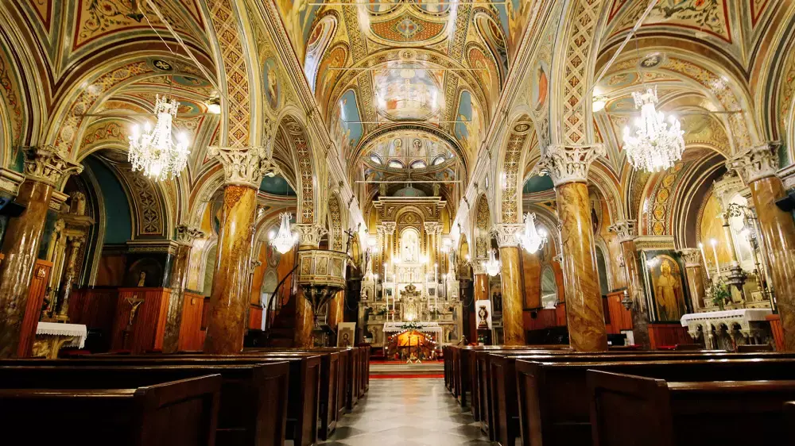
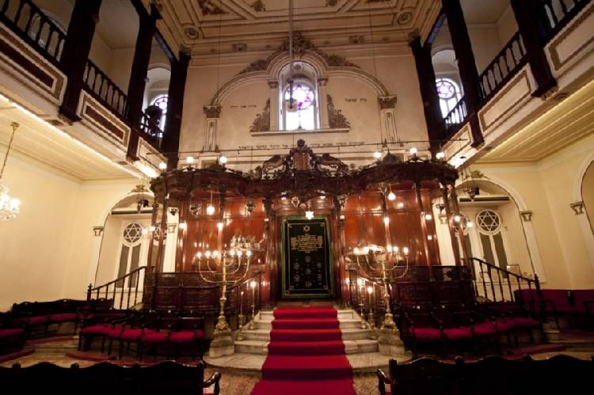
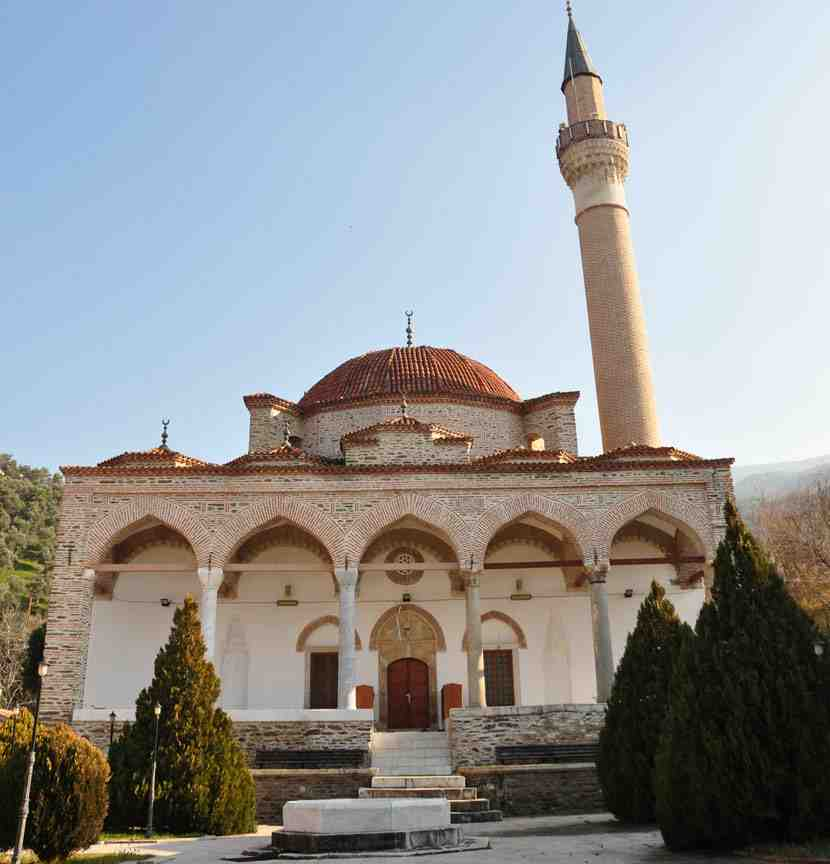
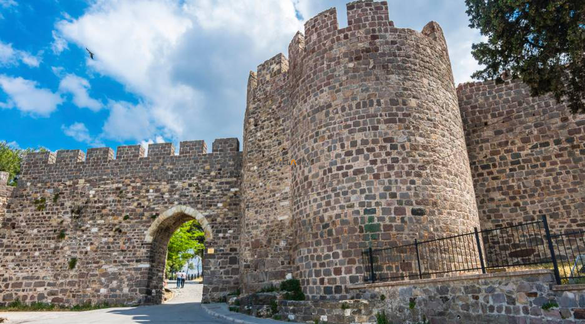

İzmir’deki Dini ve Kültürel Etkinlik Yerleri

Hisar Camii
İzmir’in en büyük ve en eski camilerinden biri olan Hisar Camii, hem dini törenler hem de kültürel etkinliklerle önemli bir merkezdir.
Adres: Konak Mah., Hisarönü, Konak/İzmir
Açık Günler: Her gün
Giriş: Ücretsiz

Saint Polycarp Kilisesi
İzmir’in en eski Katolik kiliselerinden biri olan bu yapı, dini ayinlerin yanı sıra kültürel konserlere de ev sahipliği yapar.
Adres: Gaziosmanpaşa Bulv. No:3, Çankaya/İzmir
Açık Günler: Belirli günler ve ayin saatlerinde
Giriş: Ücretsiz (Ziyaret öncesi randevu önerilir)

Beth Israel Sinagogu
İzmir’in köklü Musevi topluluğuna ait olan sinagog, kültürel miras ve dini ritüellerin yaşatıldığı önemli bir merkezdir.
Adres: Mithatpaşa Cad., Karataş, Konak/İzmir
Açık Günler: Güvenlik nedeniyle sınırlı ziyaret
Giriş: Önceden izin gereklidir

İzmir Mevlevihanesi
Osmanlı dönemine ait bu yapı, sema gösterileri ve tasavvuf müziği etkinlikleriyle kültürel bir buluşma noktasıdır.
Adres: Namazgah Mah., Altıntaş Sk. No:9, Konak/İzmir
Açık Günler: Etkinlik günlerinde
Giriş: Etkinliğe göre değişiklik gösterir

Kadifekale ve Pagos Etkinlik Alanı
Antik çağlardan günümüze ulaşan bu tarihi alan, hem dini bayramlarda hem de halk kültürünün kutlamalarında kullanılır.
Adres: Kadifekale, Konak/İzmir
Açık Günler: Her gün
Giriş: Ücretsiz